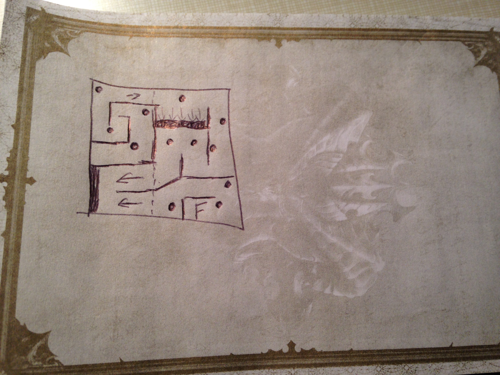
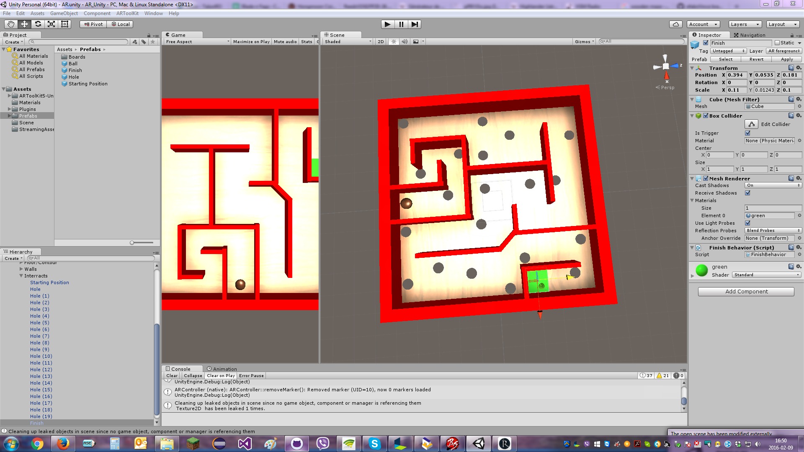

Vincent créé des composantes de bases afin de construire des labyrinthes : Le point de départ ainsi que les trous qui renvoient la balle au début. William a fait le point d’arrivé, qui signifie que le niveau a été complété.
Par la suite, Vincent a imaginé un labyrinthe qui serait d’une difficulté moyenne-avancée. Il a commencé par visualiser un plan et à le reproduire sur papier en se basant sur les dimensions du labyrinthe modèle de base.
Le plan initial comportait des obstacles assez intéressants : Des pentes. Ces pentes offrent un nouveau défi au joueur car il doit compenser pour que la bille ne glisse pas le long de la pente jusqu’au trou.
Puis Vincent a commencé à fabriquer le modèle 3D du labyrinthe sur Unity à l’aide des objets déjà fabriqués auparavant : Les murs, la planche, la bille les trous et point de Départ/Arrivé.
Au cours de la construction, Vincent s’est aperçu que l’implémentation d’une pente dans le labyrinthe serait assez difficile et préféra retirer cette fonctionnalité pour le moment et la garder en réserve pour un autre Labyrinthe.
Au final, la Labyrinthe donna un résultat très concluant, il procure un certain défi sans pour autant être trop difficile. La détection optimale de la caméra aide beaucoup au bon fonctionnement du jeu.